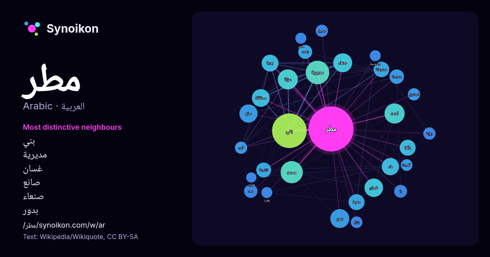

العربية · قائمة كلمات اليوم
مطر
“rain” · الكلمات الموجودة حولها في 732 ورودًا من ويكيبيديا, Wikiquote.

الجيران الأكثر تميّزًا
- بني 35×
- مديرية 30×
- غسان 23×
- صانع 22×
- صنعاء 21×
- بدور 21×
- عزلة 18×
- rain 18×
- انشودة 16×
- مستوطنة 15×
- سقوط 14×
- يمنية 14×
- احمد 11×
- سعد 10×
- مسجل 10×
- ماء 10×
- قيس 9.9×
- مسرحية 9.9×
- ينزل 9.8×
- يقصد 9.5×
× = كم مرة أكثر مما في نصوص ويكيبيديا العامة.
الجيران الأكثر تكرارًا
- بني 80
- مديرية 37
- محمد 33
- فيلم 31
- احمد 27
- عزلة 27
- عبد 25
- بدور 24
- صنعاء 24
- غسان 23
- صانع 22
- اسم 21
- محافظة 21
- ماء 20
- قرية 19
- يمنية 19
- موقع 18
- rain 17
- سقوط 17
- مستوطنة 16
في السياق
- المَطَرُ هو شكل من أشكال قطرات الماء المتساقطة من السحاب في السماء. وأنواع الأمطار ثلاثة، أمطار تصاعدية وهي التي تحدث بسبب تقلُّص الهواء الرطب القريب من Wikipedia snippets · مطر
- إسماعيل مطر إبراهيم خميس الجنيبي (7 أبريل 1983-)، لاعب كرة قدم إماراتي معتزل كان يلعب كخط وسط مهاجم أو مهاجم لنادي الوحدة الإماراتي. حصل على الكرة الذهبية Wikipedia snippets · إسماعيل مطر
- أحمد مطر شاعر عراقي ولد سنة 1954 في مدينة التنومة، مركز قضاء شط العرب في البصرة، وهو الابن الرابع بين عشرة أخوة من البنين والبنات، وعاش فيها مرحلة الطفولة Wikipedia snippets · أحمد مطر
- أنشودة المطر اسم ديوان للشاعر العراقي بدر شاكر السياب. كتبه عام 1962م وله في هذا الديوان أيضاً أشهر قصائده قصيدة «أنشودة المطر». لكن الفضل الأهم لأنشودة Wikipedia snippets · أنشودة المطر
- مطر عكر أو مطر دم أو المطر الدموي أو المطر الأحمر هو ظاهرة يُنظر فيها إلى الدم وهو يتساقط من السماء على شكل مطر. سُجلت الحالات منذ إلياذة هوميروس، والتي Wikipedia snippets · مطر عكر
- مطر إبراهيم علي مطر (مواليد 3 مايو 1976) سياسي بحريني. شغل منصب نائب في مجلس النواب عن جمعية الوفاق الوطني الإسلامية من أكتوبر 2010 وحتى استقالته في فبراير Wikipedia snippets · مطر مطر
- المطر الإعصاري أو مطر الجبهات هو مطر الرياح العكسية التي تكثر بها الأعاصير ويتسبب في سقوطه مرور الأعاصير أو الانخفاضات الجوية إذ يحدث أن يجذب الأعصار تيارين Wikipedia snippets · مطر إعصاري
- سالم مطر عبد حسن سياسي عراقي من مواليد عام 1972، حاصل على شهادة الماجستير، وهو عضو سابق في مجلس محافظة الانبار (2010-2014) ونائب في مجلس النواب العراقي Wikipedia snippets · سالم مطر العيساوي
كلمات أخرى
- أغنية
- إله
- تاريخ
- جبل
- جرس
- جزيرة
- جسر
- حديقة
- حصان
- حقيقة
- حياة
- خبز
- خريطة
- خريف
- ذهب
- زمن
- ساعة
- شاي
- شتاء
- صحة
- صحراء
- صمت
- صيف
- طبيعة
- طريق
- طعام
- ظل
- عائلة
- عاصفة
- عسل
- علم
- عمل
- غابة
- فن
- قطار
- قطة
- قلب
- قوة
- كلب
- لغة
- ماء
- مال
- مدينة
- مرآة
- ملح
- مناخ
- موت
- نجم
- والدة
حُسبت مسبقًا في 2026-10-09 بالإعدادات الافتراضية (±5 كلمات، مدوّنة متوسطة). يمكن للخريطة التفاعلية تحديثها ببيانات حية.
واجهة مترجمة آليًا؛ نرحب بالتصحيحات.